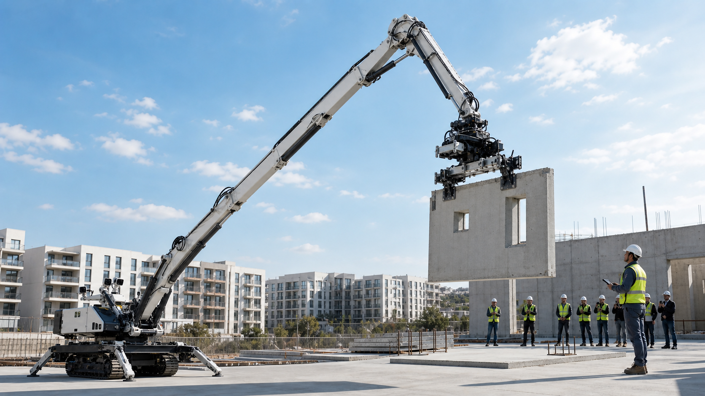

בטיחות
אלמנטים כבדים, עבודה בגובה ותיאום ידני יוצרים סיכון גבוה לעובדים ולציוד.

Construction robotics from Israel
Structo Robotics מפתחת מערכת רובוטית להרכבת אלמנטים טרומיים באמצעות פלטפורמת high-reach כבדה, אחיזה בארבע נקודות, ראייה ממוחשבת וחיבור ברגים אוטומטי.
The company
במקום לפתח מכונת בנייה כבדה מאפס, Structo Robotics משתמשת בפלטפורמת demolition/high-reach קיימת כגון Volvo EC950 High Reach ומוסיפה תוכנה, חיישנים, בקרת תנועה, מנגנון אחיזה ומניפולטור לחיבורי ברגים.
Market problem
אלמנטים כבדים, עבודה בגובה ותיאום ידני יוצרים סיכון גבוה לעובדים ולציוד.
קבלנים מתקשים למצוא צוותי הרכבה מיומנים, והעיכוב מתגלגל לכל לוח הזמנים.
סטייה קטנה במיקום יכולה ליצור תיקונים, המתנה למנוף ועלויות נוספות.
Solution
המערכת מיועדת לקחת אלמנט בטון טרומי, לייצב אותו בארבע נקודות, למדוד עומסים ותנודות, לתקן סטיות בזמן אמת, ולהשלים חיבור ברגים בנקודות חיבור שהוכנו מראש.
בסיס מכני כבד עם זרוע כמעט 50 מטר ויכולת עבודה סביב 3 טון ב-POC.
חלוקת עומסים, יציבות והפחתת תנודות באלמנט.
יישור נקודת החיבור, הזנת בורג, הידוק מבוקר ותיעוד מומנט.
Technology
ראייה ממוחשבת לזיהוי אלמנט, נקודת הצבה ונקודות חיבור.
בקרה בזמן אמת לפיצוי תנודות, סטיות ועומסים בקצה הזרוע.
מניפולטור עזר לחיבורי ברגים מבוקרים בין בלוקים מוכנים מראש.
תיעוד דיוק, זמן מחזור, עומס ומומנט לצורך בקרת איכות ושיפור.
Proof of concept
Market
בטיחות, זמני ביצוע ואיכות התקנה.
סטנדרטיזציה של בלוקים ונקודות חיבור.
שכבת רובוטיקה חדשה לפלטפורמות heavy-duty.
Roadmap
תכנון POC, חיישנים, אחיזה, מניפולטור ובטיחות.
כיול, ניסויים, מדדי דיוק וחיבור ברגים.
אתר הדגמה עם שותף תעשייתי.
לקוח ראשון, שותפויות וסבב המשך.
Contact
נשמח לדבר עם קבלנים, יצרני אלמנטים טרומיים, בעלי ציוד כבד, משקיעים ושותפי פיתוח.